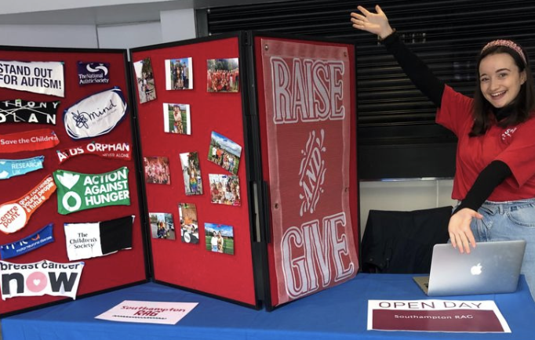

Rhiannon
Morgan
digital marketing and
communications
BA German and Spanish:
graduating in 2023
I'm an enthusiastic final year student at the University of Southampton, currently working part-time as a Junior Communications Executive while I complete my degree in German and Spanish
about me.
I'm a driven extrovert, constantly thinking ways to improve a piece of work. I'm not afraid to speak up and suggest new and out-of-the-box ideas. I enjoy finding the balance between creativity and strategic thinking in my work by producing engaging content that resonates with its target audience.

In my free time, I enjoy volunteering with university societies and performing with the musical theatre and drama societies.
sample work.
During my summer internship with MOSL, I was often asked to produced fresh content for their social media channels.
Instagram business case
The main objective of my internship at MOSL was to carry out desktop research of our trading parties' social media presence and then, based on that analysis, pitch to the Senior Leadership Team the case for why MOSL should invest in an Instagram account. I'm proud to say that the business case was approved and we are now making strides towards our official Instagram launch.
contact
me.

Get to know me by reading my internship blog.